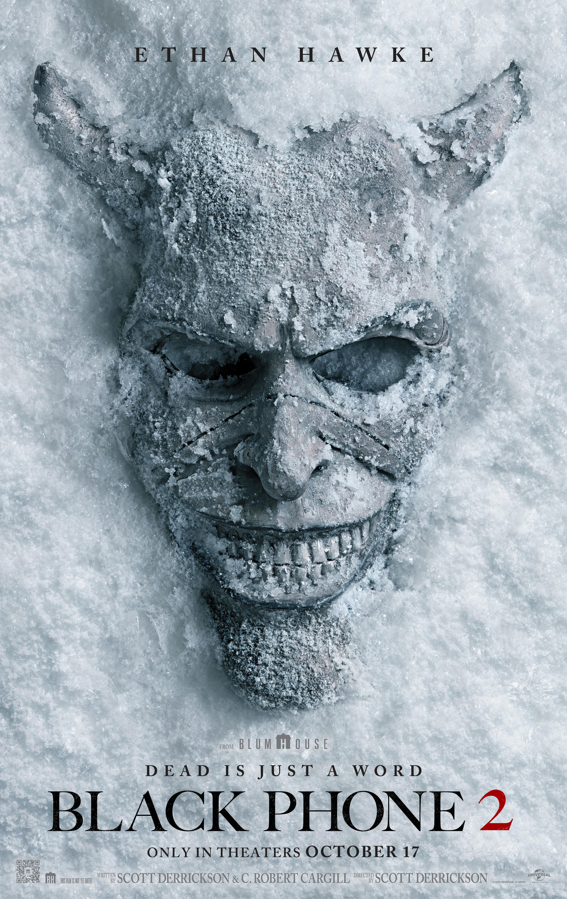
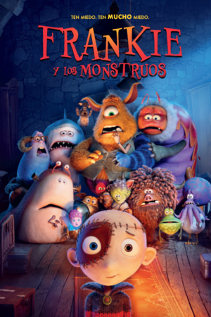
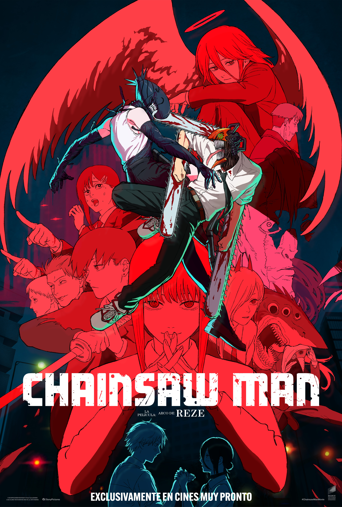
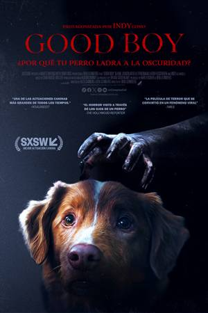
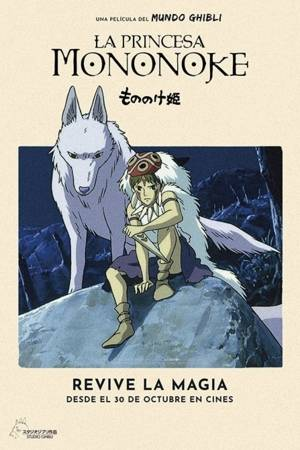
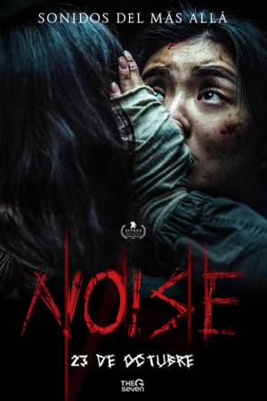

La historia nos adentra en un lúgubre sótano insonorizado cuyas paredes están manchadas con la sangre de las víctimas que anteriormente estuvieron allí cautivas. Colgado de esas mismas paredes hay un teléfono. Está desconectado, pero cuando ese teléfono comienza a sonar, a través de él pueden escucharse las voces de los niños que un siniestro enmascarado secuestró y asesinó. El Captor está de vuelta en una nueva entrega cargada de suspense, acción y horror.

FrankieEn un castillo-laboratorio situado en lo alto de la pequeña ciudad de Tarados de Arriba, el más loco de los profesores locos despierta monstruosas creaciones a la Casi-Vida... para luego olvidarse rápidamente de ellas. ¿Quién cuida del castillo? ¿Quién cuida de los monstruos? ¿Quién les enseña a no ser monstruosos, para que la gente del pueblo no forme una turba enfurecida y queme el castillo?

ChainsawDenji trabajaba como cazador de demonios para la yakuza, intentando saldar la deuda que heredó de sus padres, hasta que la yakuza lo traicionó y lo mandó matar. Mientras perdía el conocimiento, Pochita, la querida perra diabólica de Denji, impulsada por una motosierra, hizo un trato con él y le salvó la vida.

Good BoyUn perro leal se muda a una casa rural con su dueño Todd. Allí descubre fuerzas sobrenaturales que acechan en las sombras. Mientras oscuras entidades amenazan a su compañero humano, el valiente cachorro debe luchar para proteger a quien más quiere.
Yuka Okkotsu obtiene el control de una maldición extremadamente poderosa y acaba inscrito en el Colegio Técnico de Magia Metropolitana de Tokio, donde otros hechiceros deciden ayudarlo a controlar y vigilar su poder.
Un supergrupo de k-pop usa sus poderes secretos para proteger a sus fans de amenazas sobrenaturales y de una banda rival de chicos decididos a robar corazones y mentes.

MononokeCon el fin de curar la herida que le ha causado un jabalí enloquecido, el joven Ashitaka sale en busca del dios Ciervo, pues sólo él puede liberarlo del sortilegio. A lo largo de su periplo descubre cómo los animales del bosque luchan contra hombres que están dispuestos a destruir la Naturaleza.

NoiseEl profesor universitario Jack Gladney y su familia ven alterada su vida cuando una fuga de productos químicos provoca un "Evento Tóxico en el Aire", liberando una nociva nube negra sobre la región que obliga a la familia Gladney a evacuar.
Zootopia 2 es una cinta animada de aventura, secuela del éxito de 2016, que sigue la historia de la valiente coneja policía Judy Hopps, quien, con la ayuda de su amigo, el zorro Nick Wilde, deberá resolver un nuevo caso, el más peligroso y complejo de su vida y carrera.
En un castillo-laboratorio situado en lo alto de la pequeña ciudad de Tarados de Arriba, el más loco de los profesores locos despierta monstruosas creaciones a la Casi-Vida... para luego olvidarse rápidamente de ellas. ¿Quién cuida del castillo? ¿Quién cuida de los monstruos? ¿Quién les enseña a no ser monstruosos, para que la gente del pueblo no forme una turba enfurecida y queme el castillo?
Denji trabajaba como cazador de demonios para la yakuza, intentando saldar la deuda que heredó de sus padres, hasta que la yakuza lo traicionó y lo mandó matar. Mientras perdía el conocimiento, Pochita, la querida perra diabólica de Denji, impulsada por una motosierra, hizo un trato con él y le salvó la vida.
Un perro leal se muda a una casa rural con su dueño Todd. Allí descubre fuerzas sobrenaturales que acechan en las sombras. Mientras oscuras entidades amenazan a su compañero humano, el valiente cachorro debe luchar para proteger a quien más quiere.
Yuka Okkotsu obtiene el control de una maldición extremadamente poderosa y acaba inscrito en el Colegio Técnico de Magia Metropolitana de Tokio, donde otros hechiceros deciden ayudarlo a controlar y vigilar su poder.
Un supergrupo de k-pop usa sus poderes secretos para proteger a sus fans de amenazas sobrenaturales y de una banda rival de chicos decididos a robar corazones y mentes.
Con el fin de curar la herida que le ha causado un jabalí enloquecido, el joven Ashitaka sale en busca del dios Ciervo, pues sólo él puede liberarlo del sortilegio. A lo largo de su periplo descubre cómo los animales del bosque luchan contra hombres que están dispuestos a destruir la Naturaleza.
El profesor universitario Jack Gladney y su familia ven alterada su vida cuando una fuga de productos químicos provoca un "Evento Tóxico en el Aire", liberando una nociva nube negra sobre la región que obliga a la familia Gladney a evacuar.
En un castillo-laboratorio situado en lo alto de la pequeña ciudad de Tarados de Arriba, el más loco de los profesores locos despierta monstruosas creaciones a la Casi-Vida... para luego olvidarse rápidamente de ellas. ¿Quién cuida del castillo? ¿Quién cuida de los monstruos? ¿Quién les enseña a no ser monstruosos, para que la gente del pueblo no forme una turba enfurecida y queme el castillo?
Denji trabajaba como cazador de demonios para la yakuza, intentando saldar la deuda que heredó de sus padres, hasta que la yakuza lo traicionó y lo mandó matar. Mientras perdía el conocimiento, Pochita, la querida perra diabólica de Denji, impulsada por una motosierra, hizo un trato con él y le salvó la vida.
Un perro leal se muda a una casa rural con su dueño Todd. Allí descubre fuerzas sobrenaturales que acechan en las sombras. Mientras oscuras entidades amenazan a su compañero humano, el valiente cachorro debe luchar para proteger a quien más quiere.
Yuka Okkotsu obtiene el control de una maldición extremadamente poderosa y acaba inscrito en el Colegio Técnico de Magia Metropolitana de Tokio, donde otros hechiceros deciden ayudarlo a controlar y vigilar su poder.
Un supergrupo de k-pop usa sus poderes secretos para proteger a sus fans de amenazas sobrenaturales y de una banda rival de chicos decididos a robar corazones y mentes.
Con el fin de curar la herida que le ha causado un jabalí enloquecido, el joven Ashitaka sale en busca del dios Ciervo, pues sólo él puede liberarlo del sortilegio. A lo largo de su periplo descubre cómo los animales del bosque luchan contra hombres que están dispuestos a destruir la Naturaleza.
El profesor universitario Jack Gladney y su familia ven alterada su vida cuando una fuga de productos químicos provoca un "Evento Tóxico en el Aire", liberando una nociva nube negra sobre la región que obliga a la familia Gladney a evacuar.